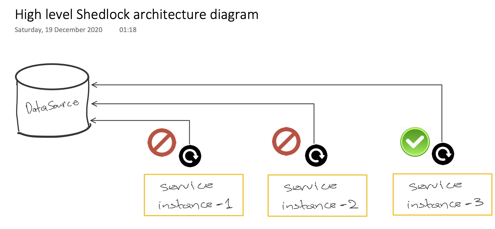
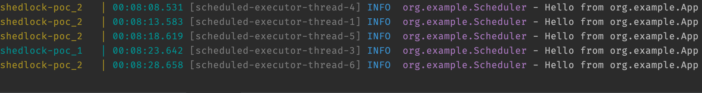

2 minutes
A very easy-to-wire-up distributed lock solution for scheduled tasks
Shedlock
is a very well documented library and has already integrated with
SpringBoot
and Micronaut way of setting a scheduled task.
Usually, these kind of frameworks can schedule a task with just simply
applying a decorator/annotation like so @Scheduled on top of your java
method.
Deploying a SpringBoot application or a Micronaut (nowadays) into an
orchestration platform like Kubernetes usually brings some issues;
these scheduled tasks are bound to the container/vm they’re running into.
Meaning that, if we have 3 replicas of that service that executes a
@Scheduled task, we will experience that task executing 3 times – once per replica of a container.
On a recent task of mine to implement a scheduled task at my work which would call a third-party api to:
- fetch some data
- update some other
- and report (after calling again and checking)
Obviously, we wouldn’t want our scheduled task to execute these routines
as many times as the replica number of the container inside the Kubernetes cluster.
Hence, a colleague of mine introduced me to Shedlock.
As mentioned above, Shedlock already has support on SpringBoot
and Micronaut so to make it work was no pain at all. The only dependency
required is a DataSource – a DB, cache, etc. The list of all the datastores
that it supports is right here
Mongo
Redis
ElasticSearch
Cassandra
...
and many more!
On a high level, Shedlock creates an index/table where the id of the scheduled
task is locked, and it will make sure that only one of the instances
will execute the scheduled task. Of course, if one of the instances will fail for any reason,
the lock will be released for the next available!

Shedlock needs just another annotation on top of your scheduled task as follows in my example:
@Scheduled(fixedDelay = "5s")
@SchedulerLock(name = "say-hello-scheduler")
void schedule() {
assertLocked();
log.info("Hello from {}", App.class.getName());
}
along with some extra configuration in application.yml
shedlock:
defaults:
lock-at-most-for: 8s
lock-at-least-for: 5s
Now the @Scheduled expects a LockProvider to be declared somewhere. Thus, in my example
where I used Elasticsearch as my datastore, we would have factory bean method like so:
@Factory
public class SchedulingLockConfiguration {
@Singleton
LockProvider lockProvider(RestHighLevelClient client) {
return new ElasticsearchLockProvider(client);
}
}
In the docs of the library you can find factory bean methods for all the datastores that currently the library is integrated and supports to build the lock.
Here’s the output logs of a demo PoC I did

That’s it! I hope this blog helped…
The repo can be found right here
https://github.com/pagidas/shedlock-poc